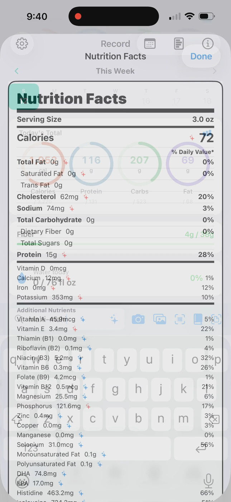
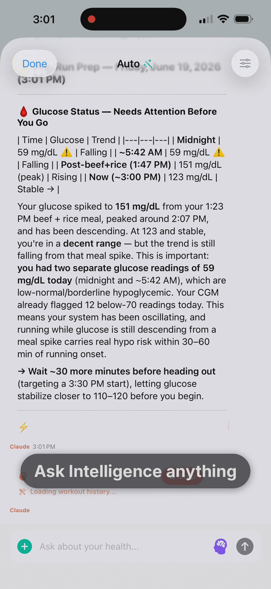
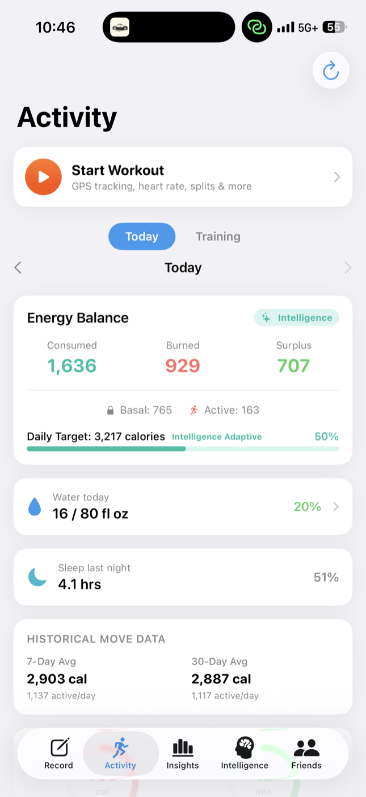

You came here from a physics podcast. Good.
Equilibrium is the state where nothing happens ever again — physics' word for death. Being alive is entropy management: holding an improbable pattern by exporting disorder, meal by meal, mile by mile, night by night. StatsKey is the instrument for managing it in alignment with your goals, instead of by accident.
The argument, from first principles
Equilibrium is maximum entropy — no gradients, no flows, no you. A body at equilibrium is a body at room temperature. So "balance" was never really the goal: being alive is holding a structured, wildly improbable state against the second law, and health is holding it on purpose. Every goal you have — a stable glucose curve, a faster half marathon, a gut that behaves, a body composition you chose — is a choice of which far-from-equilibrium state to occupy. StatsKey is the tool for steering that choice with evidence.
Energy balance isn't diet culture; it's the first law doing accounting the universe enforces whether or not you watch. StatsKey keeps the ledger visible — consumed, burned, basal, active, surplus — and records a meal in seconds by photo, text, barcode, or label, because an instrument you won't use has no resolving power at all.
Wildly different microhistories share the same average. The founder's own data made the point: a +1,000 kcal/day surplus — a perfectly healthy-looking macrostate — concealed overnight glucose of 39 mg/dL. The daily total was fine. The path through the day was not. Only time-resolved recording can see the path.
Population guidance is an ensemble statement — true averaged over many people, silent about any one of them. No theorem promises the ensemble mean describes you. The same meal produces different glucose responses in different bodies, which is why StatsKey's premise is measure the response, not just the intake: n-of-1 instrumentation instead of borrowed averages.
Every field became a science when measurement replaced introspection — and the strongest constraints come from combining datasets. Cosmology needs the CMB, supernovae, and lensing together; a human needs meals, glucose, training, sleep, and gut signals on one timeline. Today those live in five apps that have never met. StatsKey is the joint fit: one private, connected model of you, with 50+ nutrients per meal and live glucose and workout import.
StatsKey stores a number and how it was known — label, photo estimate, database, verified entry — and its Intelligence layer answers from your evidence, cites its sources, and says "I don't know" when the data is thin. No streaks, no confetti, no oracle. An instrument that hides its error bars isn't an instrument; it's a horoscope.
The instrument itself
Live screens from the shipping app — meal recording with full micronutrient depth, Intelligence reading an actual glucose response, and targets that update as your training changes.



The offer
StatsKey is an iOS + Apple Watch app (with a full web app) built by a solo founder-engineer who needed the instrument to exist. The core app is free — recording, nutrients, workouts, biometrics. Pro ($4.99/mo) and Pro+ ($19.99/mo) add more Intelligence on top. Set the goal — the state you intend to hold — and manage toward it with evidence.
It connects Apple Health and Dexcom, records meals faster than you can weigh a skeptical thought, and never asks you to trust a number it can't explain.
Take the data.
Free to start. Your model stays private and yours.
Download on the App Store Explore StatsKey on the webStatsKey is a wellness tool, not a medical device. It doesn't diagnose or treat anything — it makes your own evidence legible.
Equilibrium comes for everyone eventually. The art is choosing your distance from it.